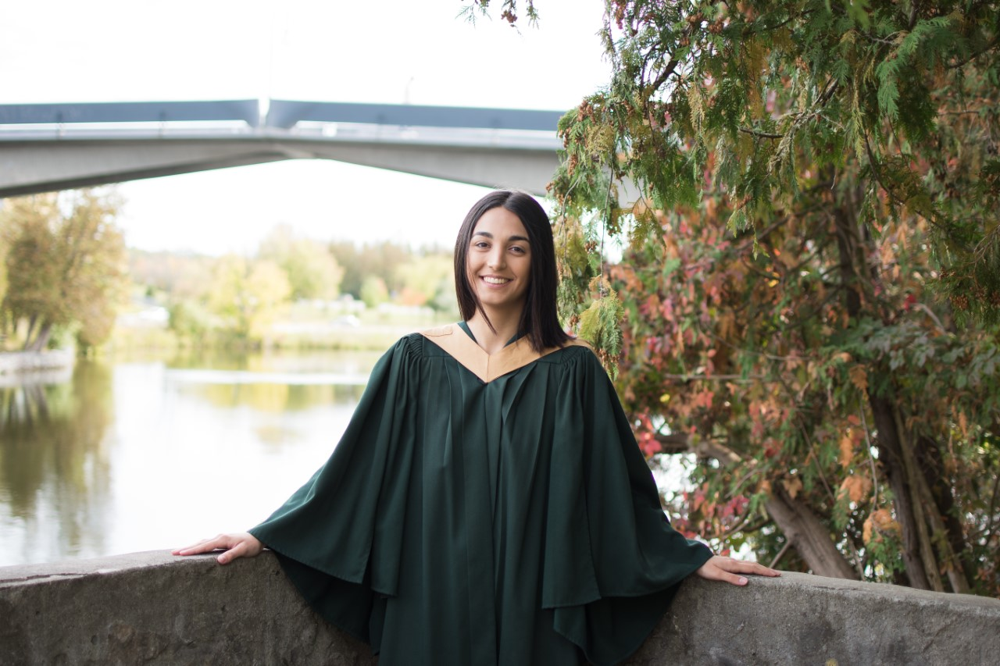

<!DOCTYPE html>
<html lang="en">
</body>
</html>

<!--On this page I have added items 5 and 6. -->
<!-- Linking page to my CSS sheet-->
<head>
<title>Sevda Laghayi</title>
<!-- link to main stylesheet -->
<link rel="stylesheet" type="text/css" href="style.css">
</head>
<body>

<!-- Linking all my pages with navbar -->
	<nav>
    	<ul>
        	<li><a href="/">Home</a></li>
	        <li><a href="gallery.html">Gallery</a></li>
    	</ul>
	</nav>
	
<!-- content in blocks -->
<div class="container">
<div class="blurb">
<h1>Home</h1>
<p> <em>Welcome to my website!</em> My name is Sevda, here you will learn about me and see some pictures I took from when I travelled. <a href="https://flemingcollege.ca/">Visit Fleming College to learn about the school I am in!</a></p>
</div>

<!-- inspiration for layout/design https://www.w3schools.com/html/tryit.asp?filename=tryhtml_layout_float -->

<!-- Using a relative path to link to image source -->
</div>

</div>

<!-- Using columns to put the text in 2 columns. Reference W3 schools-->
<div class="row">
<div class="column">
 <h2> I recently graduated Trent University Woooooooo! </h2>
<p> I miss university a lot...</p>
</div>
<div class="column2">
<h2> About Me </h2>
	<p> Having grown up on a big farm, I've always loved nature, animals and the outdoors. Adventuring is my favourite thing to do! 
	    I love travelling and hope to someday do more travelling once COVID is over. Other then travelling, I love to cook and read self-help books. 
	   When I'm not reading, cooking or learning in school, I am most likely playing with my two pets, my cat Tigs and my dog Hugo. 
	
		
		<h2> School </h2>
		<p> Having grown up on a big farm, I've always loved nature, animals and the outdoors. 
		    This sparked my passion for the environment and encourgaed me to get a degree in Environmental Science.
		While in my undergrad, I participated in several volunteer opportunities including: turtle conservation, invasive species removal,
		    environmental education etc. These opportunites led me to getting a job in the environmental field and I am so grateful. 
		    After hearing about how desired GIS skills are in the field, I decided to take the GIS program at Fleming College. 
		    One of my favourite classes is remote sensing, can't wait to learn more! </p>
	</div>
</div>

		<footer>
    		<ul>
        		<li><a href="mailto:slag@flemingcollege.ca">Need to contact me? Here is my Fleming email!</a></li>
        		</li><a href="https://www.linkedin.com/in/sevdalaghayi/">Check out my Linkedin!</a>			     
			</ul>
		</footer>
	</body>
</html

